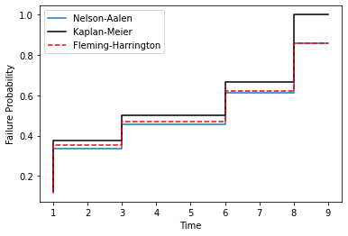
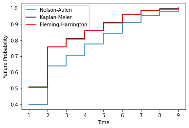

Non-Parametric Estimation¶
Non-parametric survival analysis is the attempt to capture the distribution of survival data without making any assumptions about the shape of the distribution. That is, non-parametric analysis, unlike parametric analysis, does not assume that the survival data was Weibull distributed or that it was Normally distributed etc. Concretely, non-parametric estimation does not attempt to estimate the parameters of a distribution, therefore “non-parametric.” Parametric analysis is covered in more detail in the section covering parametric estimation but it is important to contrast non-parametric estimation against what it is not. So what exactly is non-parametric analysis?
Survival analysis is using statistics to answer the question ‘what is the probability that the thing survived to a particular time?’ Non-parametric analysis answers this by estimating the probability from the proportion failed upto a given time. This can be done by either estimating the probability of surviving a particular segment or estimating the hazard rate.
Non-parametric estimation is well understood by appreciating the data format used to estimate the CDF. Specifically, the ‘xrd’ format and particularly understanding the r and d sets of that format.
The number of components at risk, r, at a given time, x, is the number of things at risk just prior to time x. The number of deaths, d, is the number of the at risk items that died (or failed) at time x. So for completely observed data the number at risk counts down for every death. So r would count down, e.g. 6, 5, 4, 3… for each death, 1, 1, 1, 1, … So in this example there were 6 items at risk at one death at the first time. Then, because there was 1 death at the first time the number of items at risk has decreased to 5, therefore for the next death there are only 5 at risk. This continues further until there are no more items at risk because they have all died, i.e. there is 1 at risk and 1 death.
This can be extended to more than one death. For example, the risk set could be 8, 6, 5, 3, 2, 1. with an accompanying death set of 2, 1, 2, 1, 1, 1. In this example there were times where there were 2 deaths and therefore the number at risk decreased by 2 after that number of deaths.
So a complete example of this format is:
x = [1, 2, 3, 4, 5, 6]
r = [7, 5, 4, 3, 2, 1]
d = [2, 1, 1, 1, 1, 1]
This format for data is not how survival data is usually provided in text books or papers. Survival data is usually displayed with the simple list of failure times such as “1, 3, 6, 7, 10, 16”. The first step surpyval does for non-parametric analysis is to transform data into the xrd format. All the fit() methods for surpyval take as input the xcnt format, see more at the data types docs. So if you provide surpyval with the data “1, 2, 3, 4, 5, 6” it will assume that each of them are one death, and then create the risk set from the death counts resulting in the xrd format from above.
Given we now understand the format of the data we can estimate the probability of survival to some time with non-parametric methods. The first method we will visit is the Kaplan-Meier.
Kaplan-Meier Estimation¶
Kaplan-Meier [KM] is a very popular method for estimating survival curves for populations. The insight for this method is that for each time there is a death, we can estimate the probability of having survived since the previous deaths. Using the data from above as an example, at time 1, there are 7 items at risk and there are 2 deaths. We can therefore say that the probability of surviving this period was (7 - 2)/7, i.e. 5/7. Then the next time there is a death, the probability of having survived that extra time is (5 - 1)/5, i.e. 4/5.
To be clear, this is the chance of survival between each death. Therefore the chance of surviving up to a given time is the chance of surviving each segment. Therefore the probability of surviving up to any given time is the probability of surviving through all the previous segments. The probability of surviving multiple outcomes is the multiplication of each of the survival probabilities. Surviving through three sections is equal to the probability that I survive the first, then multiply this by the probability of surviving the second, then multiplying this result with the probability of surviving the third. So continuing our example from above, the probability of surviving the first two segments is (5/7) x (4/5) = 4/7.
Therefore using the at risk count, r, and the death count, d, can be used to estimate the segment survival probabilities and the survival probability to any point can be found by multiplying these probabilities. Formally, this has the following formula:
Nelson-Aalen Estimation¶
The Nelson-Aalen estimator [NA] (also known as the Breslow estimator), instead of finding the probability, estimates the cumulative hazard function, and given that we know the relationship between the cumulative hazard function and the reliability function, the Nelson-Aalen cumulative hazard estimate can be converted to a survival curve.
The first step in computing the NA estimate is to convert your data to the x, r, d format. Once in this format the instantaneous hazard rate is found by:
This estimate of the instantaneous hazard rate is the proportion of deaths/failures at a value, x. Then to find the cumulative hazard rate for any x we simply take the sum of the instantaneous hazard rates for all the values below x. Mathematically:
Then, since we know that the reliability, or survival function, is related to the cumulative hazard function, we can easily compute it.
So we now have the survival/reliability function. One benefit of the Nelson-Aalen estimator is that it does not estimate a probability of 0 for the highest value (in a completely observed data set). This means that for a completely observed data set the whole estimation can be plotted on a transformed y-axis. For this reason SurPyval uses the Nelson-Aalen as the default plotting position.
Fleming-Harrington Estimation¶
The Fleming-Harrington estimator [FH], uses the same principal as the Nelson-Aalen estimator. That is, it finds the cumulative hazard function and then converts that to the reliability/survival estimate. However, the NA estimate assumes, for any given step that the number of items at risk is equal for each death, the FH estimate changes this. Mathematically, the hazard rate is calculated with:
Which can be summarised as:
The cumulative hazard rate therefore becomes:
You can see that the cumulative hazard rate will be slightly higher than the NA estimate since:
The above is less than or equal for the case where there is one death/failure. The Fleming-Harrington and Nelson-Aalen estimates are particularly useful for small samples, see [FH].
Turnbull Estimation¶
The Turnbull estimator is a remarkable non-parametric estimation method for data that can handle arbitrary censoring and truncation [TB]. The Turnbull estimator can be found with a procedure of finding the most likely survival curve from the data, for that reason it is also known as the Non-Parametric Maximum Likelihood Estimator. The Kaplan-Meier is also known as the Maximum Likelihood estimator, so is there a contradiciton? No, the Turnbull estimator is the same as the Kaplan-Meier for fully observed data.
The Turnbull estimate is really an estimate of the observed failures given censoring, and then the ‘ghost’ failures (as Turnbull describes it) due to truncation. Turnbull’s estimate converts all failures to interval failures regardless of the censoring. This is because a left censored point is equivalent to an intervally censored observation in the interval -Inf to x, and a right censored point is equivalent to an intervally censored observation in the interval x to Inf. Then for all the intervals between negative infinity we find how many failures happened in that interval. This value need not be a whole number since a single observation could have failed across several intervals. To estimate the failures, we use:
Where \(\mu_{ij}\) is the probability of the i-th observation failing in the j-th interval, \(\alpha_{ij}\) is a flag to indicate if the i-th failure was at risk in interval j, (1 if at risk and 0 if not), and \(s_j\) is the probability of failure in an interval. That is, \(s_j\) is the survival function we are trying to estimate.
If an observation is truncated, it was only a possible observation among others that would have been seen had the observation not been limited. To estimate the additional at risk items outside of the domain for which an observation is truncated we use:
Where \(\nu_{ij}\) is the probability of the i-th observation failing in the j-th interval and \(\beta_{ij}\) is a flag to indicate if the i-th failure was observable in interval j, (1 if at risk and 0 if not).
This formula then finds the number of failures outside the truncated interval for a given observation.
We can then estimate the probability of failure in a given interval using the total failures in each interval divided by the total number of failures:
where
Using this estimate of the survival function, it can be input to the start of this procedure and it done again. This can then be repeated over and over until the values do not change. At this point we have reached the NPMLE estimate of the survival function!
The Turnbull estimation is the only non-parametric method that can be used with truncated and left censored data. Therefore it must be used when using the plotting methods in the parametric package when you have truncated or left censored data.
On Surpyval’s Default¶
Surpyval uses the Fleming-Harrington estimator as the default. The rationale for this is because it has optimal behaviour. That is, it performs well where the Kaplan-Meier and the Nelson-Aalen behave poorly.
The Kaplan-Meier, since it tends to 1, results in cases where it overstates the probability of failure. It is because of this that the Kaplan-Meier should not be used in circumstances of competing risks. As an example, a comparison between a Nelson-Aalen and Kaplan-Meier estimate over time (I have plotted the Fleming-Harrington estimate for later discussion):

On the contrary, the Nelson-Aalen estimate performs poorly with lots of ties. This results in the Nelson-Aalen estimator overstating the risk for lower failure times. This is in contrast to the Kaplan-Meier estimator which does well with lots of tied values. For example:

The Fleming-Harrington, plotted in red in the above two charts, optimises between these two estimators. The Fleming-Harrington estimate approaches the Nelson-Aalen under the conditions of where the Nelson-Aalen estimate performs well and the Kaplan-Meier does poorly. Fleming-Harrington also does well where the Nelson-Aalen estimate does poorly but the Kaplan-Meier does well. Although the two examples provided are in the extreme, it is worth using the Fleming-Harrington by default since it is more flexible; it is therefore, for this reason, that surpyval does exactly that. This is not to say not to use KM or NA, but only when you are sure you are making the correct assumptions about what you are doing!
References¶
- KM
Kaplan, E. L., & Meier, P. (1958). Nonparametric estimation from incomplete observations. Journal of the American statistical association, 53(282), 457-481.
- NA
Nelson, Wayne (1969). Hazard plotting for incomplete failure data. Journal of Quality Technology, 1(1), 27-52.
- FH(1,2)
Fleming, Thomas R and Harrington, David P (1984). Nonparametric estimation of the survival distribution in censored data. Communications in Statistics-Theory and Methods, 13(20), 2469-2486.
- TB
Turnbull, Bruce W (1976). The empirical distribution function with arbitrarily grouped, censored and truncated data. Journal of the Royal Statistical Society: Series B (Methodological), 38(3), 290-295.